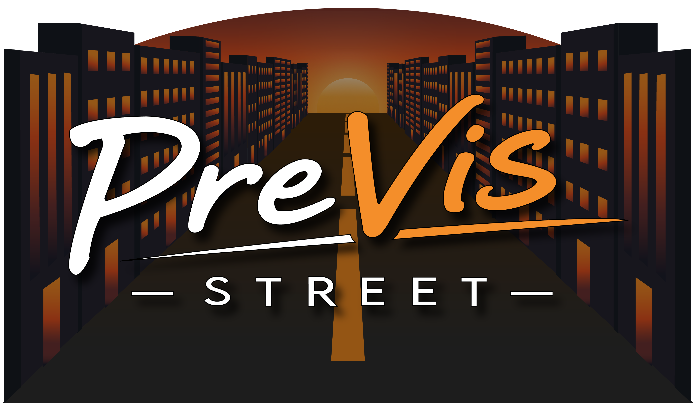

PreVis Street is a pre-production, pre-visualization website that allows you to remove the guesswork from your storyboarding. Find your shooting location on Mapillary, then take it to PreVis Street to turn it into a 3D environment where you can set up and plan camera angles using references from your exact shooting location!